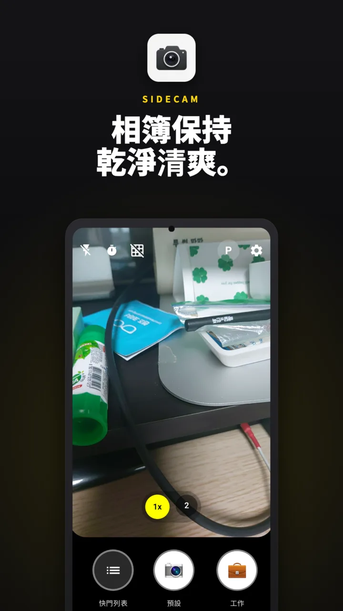
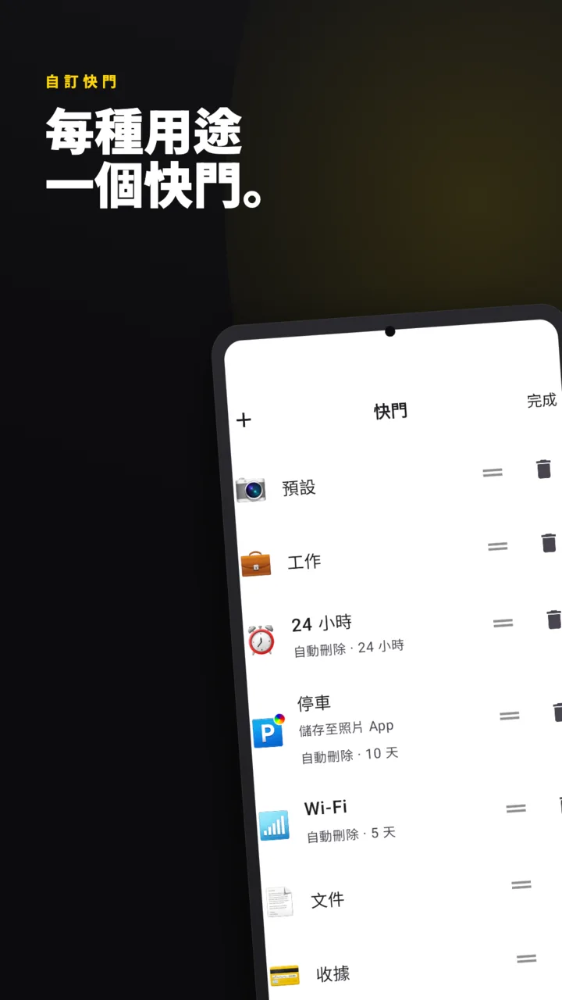
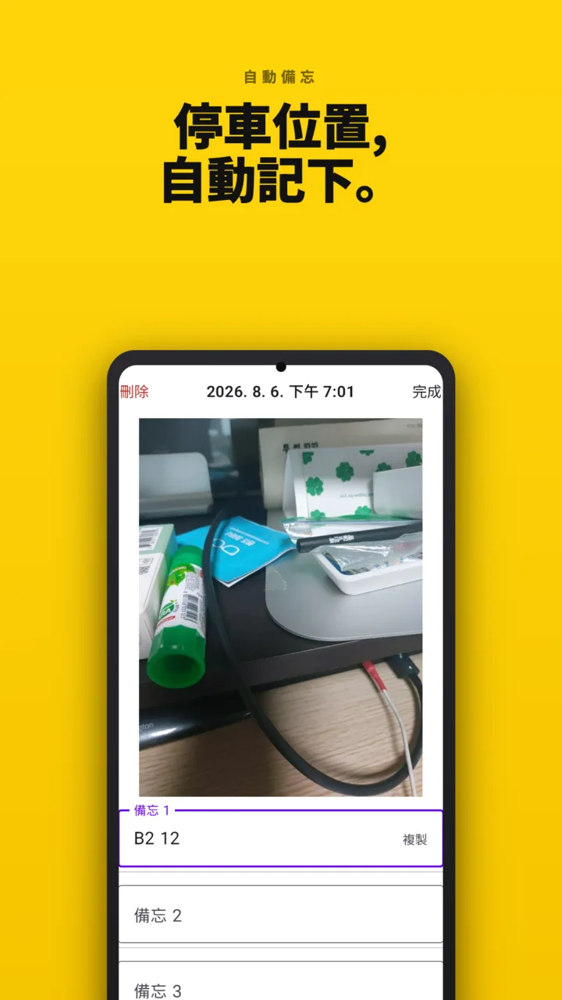
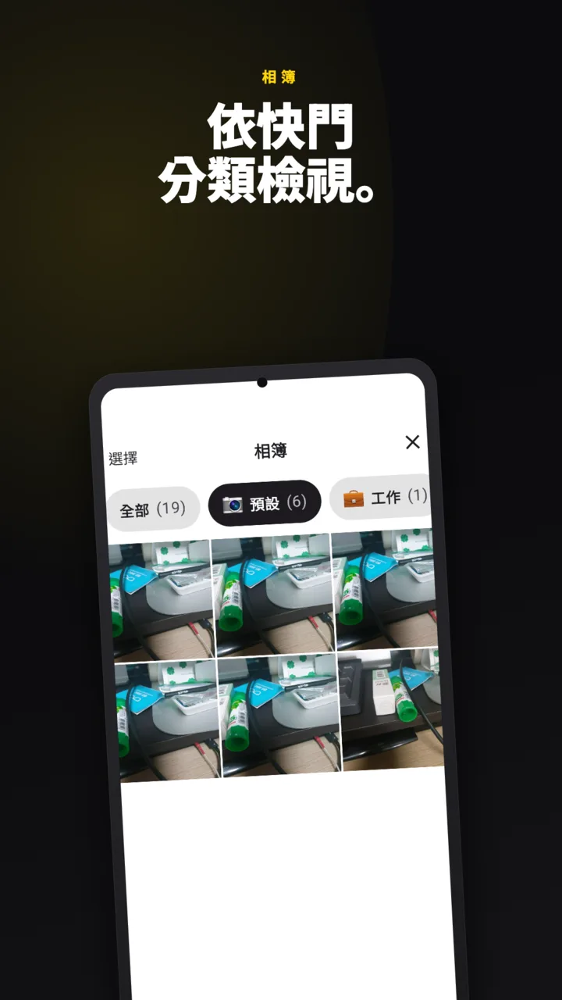
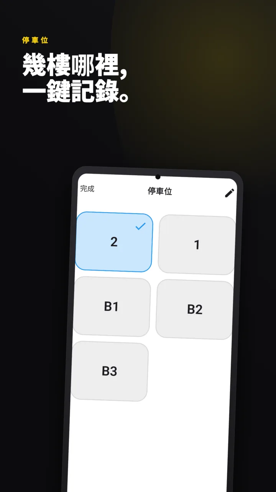
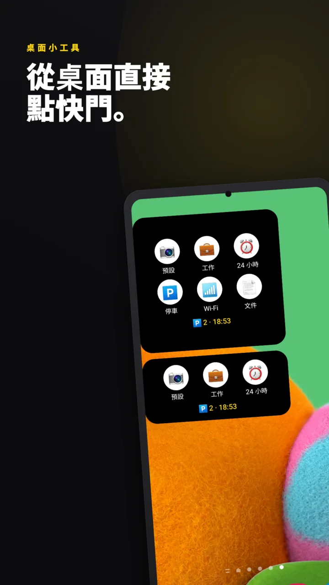
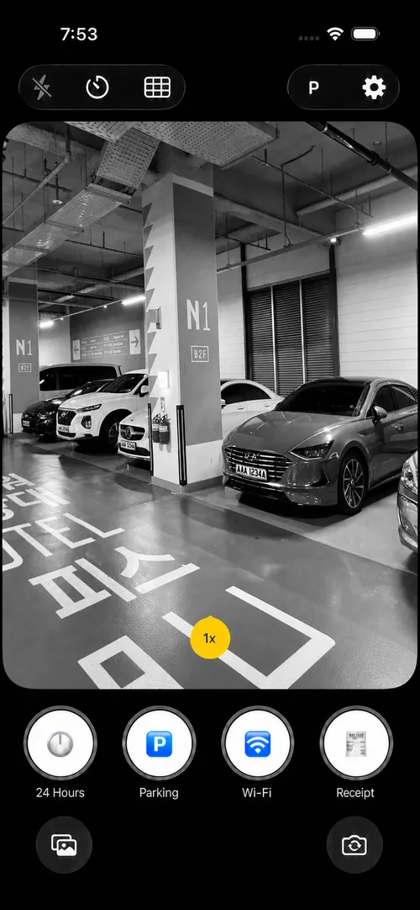
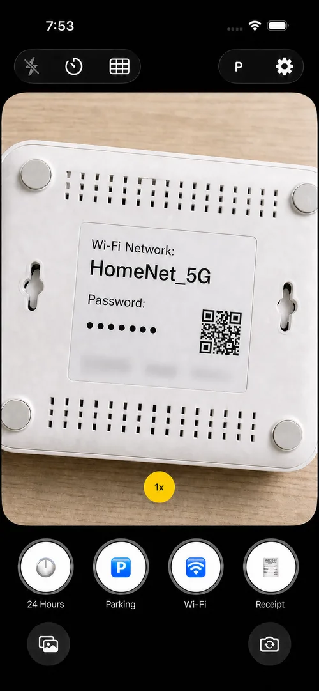
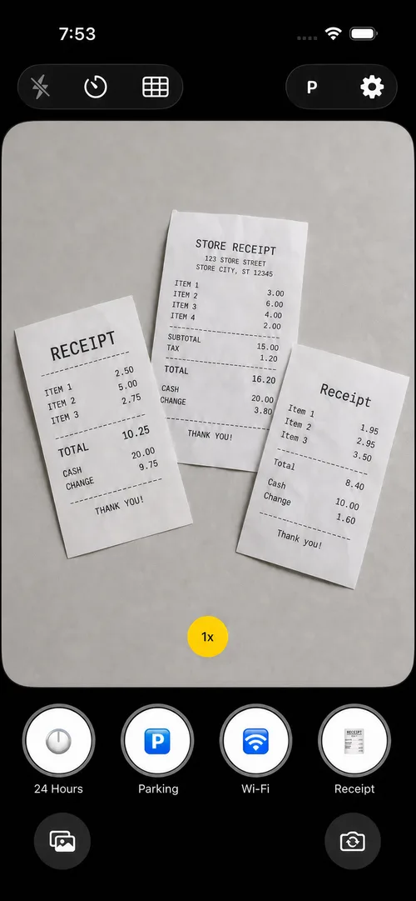

過幾天就會刪的照片,
別放相簿,放SideCam
停車樓層、咖啡店Wi-Fi密碼、一張收據。把只需要一陣子的照片和備忘與相簿分開存放,到了設定的期限,App會自動刪除。

你的相簿裡,
這樣的照片有幾張?
相簿是用來裝回憶的,不該塞滿停車樓層和Wi-Fi密碼。想清理時打開相簿,卻不知道該從哪刪起。
拍完之後的事,
交給快門來辦
用哪個快門拍,拍完後發生的事就不同。輕點一下就夠了。
每個快門,拍後動作各不相同
內建7個快門,名稱、表情符號(200多種)、選項、順序都能隨意更改。
- 是否同時存入相簿 — 或只留在App內
- 靜音拍攝 — 在圖書館也不尷尬
- 拍後立即預覽 — 用於需要確認的照片
- 立即叫出備忘鍵盤 — 趁還沒忘記車位號
- 多久後刪除 — 從30分鐘到30天共9段

替你讀出照片裡的文字並記下
用停車或Wi-Fi快門拍攝,SideCam會辨識照片中的文字,把車位號或密碼預先寫進備忘。之後輕點備忘即可複製。
- 每張照片最多3則備忘
- 輕點一下複製到剪貼簿
- 文字辨識僅在裝置內處理 — 照片不會被傳送到任何地方
- 支援辨識韓文·英文·日文·中文

整理交給App
為每個快門設好保留期限,過期的照片會自動消失。連該整理這件事本身都可以忘掉。
- 停車照片留10天,收據留1個月,看一眼就好的畫面留30分鐘
- 想留下的照片,隨時存入相簿
- 全部刪除需要生物辨識驗證

下車的瞬間,不會錯過
車輛藍牙斷開時會收到通知。開啟自動啟動後,相機會立即打開。
- 社區、公司這類常去的停車場,提前登錄車位
- 停在地下幾樓,輕點一下就記錄
- 每30分鐘提醒已停了多久
- 記住車位的不是GPS,而是你自己拍的照片

需要的瞬間,
最快打開
主畫面小工具
輕點想用的快門,相機就會以該快門選取的狀態打開。放大尺寸還能同時看到已登錄的車位和停車時間。
快速設定圖塊
下拉通知列即可拍攝,不用再翻找App。
鎖定畫面捷徑
不解鎖也能拍。此時只能拍攝,相簿和設定仍處於鎖定狀態 — 就算手機短暫落到別人手裡,照片和備忘也打不開。

iPhone上,
同樣的SideCam
快門、照片文字備忘、自動刪除 — 在iPhone上完全一樣。還能從鎖定畫面小工具和控制中心直接啟動。



- 不上傳伺服器·無帳號
- 完全不要求位置(GPS)權限
- 文字辨識也在裝置內處理
- 其他App無法存取的儲存空間
- 全部刪除須先通過生物辨識
常見問題
拍的照片也會存到相簿嗎?
預設只儲存在SideCam內。可依快門開啟相簿儲存,也可以之後打開照片手動存入相簿。
會使用位置(GPS)資訊嗎?
不會。App本身就沒有位置權限。停車位置只透過你拍的照片、輸入的備忘以及提前登錄的車位來記錄。
免費嗎?需要帳號嗎?
免費,無需註冊或登入。照片和備忘不會傳送到伺服器,只儲存在裝置內。
被自動刪除的照片能復原嗎?
無法復原。想長期保留的照片請存入相簿,或關閉該快門的自動刪除。保留期限可在30分鐘到30天的9段中選擇。
我一直在用原本的停車相機App,資料會怎樣?
停車相機只是更名為SideCam,更新即可。已儲存的停車照片和車位都會原樣保留。
支援哪些裝置?
Android 9.0以上的裝置和iPhone(iOS 26以上)皆可使用,可在Google Play和App Store下載。支援韓文、英文、日文、中文(簡體·繁體)、德文、法文、越南文。